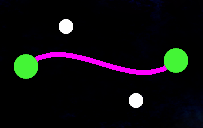

Scopo del gioco
Lo scopo del gioco è quello di creare un percorso tramite l'utilizzo della curva Spline in modo tale da raccogliere tutti i checkpoint distribuiti nella mappa entro il tempo limite imposto dal livello.
È possibile giocare direttamente da browser tramite WebGL su Windows, MacOS e Linux.
Come giocare
Posizionare un punto
Per l'inserimento di un punto di controllo nello schermo bisogna posizionare il mouse nel punto interessato e premere il tasto destro (in alternativa si può premere il tasto a), in questo modo comparirà un pallino verde. Dopo aver inserito il secondo punto vengono generati automaticamente anche i punti intermedi del poligono di controllo. Con l'aggiunta del secondo punto inoltre si genera la curva Spline. L'aggiunta del primo punto avvia il countdown.
Muovere un punto
Posizionare il cursore nel punto desiderato e tenerlo premuto col tasto sinistro del mouse per trascinarlo.
Modellare la curva
I pallini verdi rappresentano i punti iniziali e i punti finali delle curve di Bézier mentre i pallini bianchi rappresentano i punti intermedi del poligono di controllo. Il loro scopo è quello di permettere la modellazione della curva; muovere questi pallini permette di modellare il percorso attraverso il quale si supera il livello.

Far partire la navicella
Tramite il tasto RUN è possibile far partire la navicella che si muoverà lungo il percorso precedentemente generato dal giocatore.
Collezionare i checkpoint
Raccogliere tutti i checkpoint è cruciale per ottenere la vittoria. Il giocatore deve fare in modo che il percorso generato con la curva Spline passi per ognuno di essi.
Evitare gli ostacoli
I pianeti sono gli ostacoli da evitare, l'impatto con questi risulterà fatale per la navicella che perderà un punto vita.
Riflettere sul percorso ideale
Prima di posizionare il primo punto della curva Spline è opportuno riflettere sul percorso ideale, in quanto una volta posizionato parte il countdown.
Interfaccia utente
Far partire la navicella
Tramite il tasto RUN è possibile far partire la navicella che si muoverà lungo il percorso precedentemente generato dal giocatore.
Reset partita
Tramite il tasto RESET è possibile ricominciare il livello, funzione utile nel momento in cui il giocatore si rende conto di aver sbagliato qualcosa. L'utilizzo del tasto RESET prevede il consumo di una vita.
Countdown
Il countdown è il tempo che parte quando si posiziona il primo punto della curva Spline. Il giocatore dovrà creare il percorso prima che il tempo scada, facendo attenzione a riservare qualche secondo per il percorso della navicella. Non riuscire a raccogliere i checkpoint entro il tempo limite porta alla perdita di una vita e alla ripetizione del livello. Il countdown sarà differente per ogni livello.
Punteggio livello
Indica il punteggio attuale del giocatore, viene calcolato sulla base dei secondi rimanenti da un livello all'altro dopo il superamento di essi. Il punteggio viene incrementato ad ogni livello e rappresenterà il punteggio finale in caso di completamento del gioco o nel caso di game over. Lo scopo del gioco è quello di superare i livelli nel minor tempo possibile in modo da aggiudicarsi un punteggio più elevato e stabilire un record.
Contatore punti rimanenti
All'inizio del livello, indica il numero massimo di punti che si possono usare per comporre la curva Spline. Una volta aggiunto un punto, questo contatore, inizia a decrementare. Raggiunto lo zero, non sarà più possibile aggiungere ulteriori punti. Il contatore sarà differente per ogni livello.
Power Up e Malus
Sono gli oggetti che il giocatore può utilizzare a suo vantaggio o che dovrà evitare per eludere gli effetti negativi. Questi oggetti sono predisposti nella mappa a inizio livello. Sono la chiave per la risoluzione di alcune situazioni complicate e possono anche offrire dei vantaggi di tipo temporale che permettono di aumentare il potenziale punteggio finale. Attenzione, delle volte allungare il percorso per prendere un Power Up può risultare positivo ai fini del punteggio. Altre volte raccogliere dei Malus può risultare vantaggioso perchè posizionati in percorsi migliori. L'utilizzo di questi oggetti permette al giocatore di definire una strategia per la risoluzione del livello.
Crescita
La crescita aumenta le dimensioni della navicella e con essa anche le possibilità di colpire gli ostacoli predisposti sullo schermo. L'effetto di questo Power Up / Malus è definitivo per il tentativo del livello in corso. La crescita fornirà inoltre 3 secondo in più al tempo rimanente.
Decrescita
La decrescita diminuisce le dimensioni della navicella e con essa anche le possibilità di colpire gli ostacoli predisposti sullo schermo. L'effetto di questo Power Up / Malus è definitivo per il tentativo del livello in corso. La decrescita rimuoverà inoltre 3 secondo dal tempo rimanente.
Velocità
La velocità permette alla navicella di muoversi più velocemente. L'effetto di questo Power Up è definitivo per il tentativo del livello in corso.
Rallentamento
Il rallentamento fa muovere la navicella più lentamente. L'effetto di questo Malus è definitivo per il tentativo del livello in corso.
Più secondi
Vengono aggiunti 2 secondi al tempo rimanente.
Meno secondi
Vengono rimossi 2 secondi al tempo rimanente.